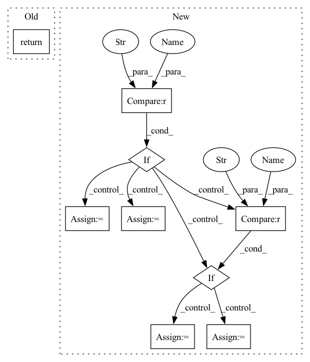

Pattern ID :16872
Before Change
cache_loc = os.path.join("cache", uri.split("//")[1]) + ".pt"
if use_cache and os.path.exists(cache_loc):
print(f"loading cached model from {cache_loc} ...")
return torch.load(cache_loc)
else:
print(f"fetching model from {uri} ...")
model = mlflow.pytorch.load_model(uri)After Change
os.makedirs(os.path.dirname(cache_loc), exist_ok=True)
if download_model:
torch.save(model, cache_loc, pickle_module=mlflow.pytorch.pickle_module)
if type == "processor" :
processor = model.processor
model.processor = None
del model // free up memory space
return processor
if type == "classifier" :
classifier = model.classifier
model.classifier = None
del model // free up memory space
return classifier
return modelIn pattern: SUPERPATTERN
Frequency: 3
Non-data size: 9
Instances Fragment ID: 56652080
Project Name: aiaudit-org/raw2logit
Commit Name: 712050d2c68affc0ebd4762ba20d159b65e918b7
Time: 2021-09-02
Author: willis@campus.tu-berlin.de
File Name: utils/base.py
M Class Name: AnonimousClass
N Class Name: AnonimousClass
M Method Name: fetch_from_mlflow(4)
N Method Name: fetch_from_mlflow(3)
M Parent Class:
N Parent Class:
M File Name: utils/base.py
N File Name: utils/base.py
M Start Line: 253
M End Line: 263
N Start Line: 249
N End Line: 270
Before Change
depth = -1
alpha = 1.
ops = augmix_ops(magnitude=severity, hparams=hparams)
return AugMixAugment(ops, alpha, width, depth)
After Change
if key == "mstd":
// noise param injected via hparams for now
hparams.setdefault("magnitude_std", float(val))
elif key == "m" :
magnitude = int(val)
elif key == "w":
width = int(val)
elif key == "d" :
depth = int(val)
elif key == "a":
alpha = float(val)
else:
assert False, "Unknown AugMix config section"
ops = augmix_ops(magnitude=magnitude, hparams=hparams) Fragment ID: 56652076
Project Name: feng-lab/pytorch-image-models
Commit Name: 3afc2a4dc0db55919a897f8e2af8aeb315b10703
Time: 2019-12-20
Author: rwightman@gmail.com
File Name: timm/data/auto_augment.py
M Class Name: AnonimousClass
N Class Name: AnonimousClass
M Method Name: augment_and_mix_transform(2)
N Method Name: augment_and_mix_transform(2)
M Parent Class:
N Parent Class:
M File Name: timm/data/auto_augment.py
N File Name: timm/data/auto_augment.py
M Start Line: 711
M End Line: 715
N Start Line: 771
N End Line: 793
Before Change
wavs, lens = truncate(wavs, lens, params.max_length)
wavs, lens = wavs.to(params.device), lens.to(params.device)
loss = params.compute_cost(predictions, wavs, lens)
return loss, {}
def evaluate_batch(self, batch, stage="valid"):
inputs, targets = batch
After Change
loss = params.compute_cost(predictions, target_wavs, lens)
stats = {}
if stage != "train" :
lens = lens * target_wavs.shape[1]
pesq_scores = multiprocess_evaluation(
predictions.cpu().numpy(),
target_wavs.cpu().numpy(),
lens.cpu().numpy(),
multiprocessing.cpu_count(),
)
stats["pesq"] = pesq_scores
stats["stoi"] = -stoi_loss(predictions, target_wavs, lens)
if stage == "test" :
// Write wavs to file
for name, pred_wav, length in zip(ids, predictions, lens):
name += ".wav"
enhance_path = os.path.join(params.enhanced_folder, name)
torchaudio.save(
enhance_path, pred_wav[: int(length)].to("cpu"), 16000
)
Fragment ID: 56652078
Project Name: speechbrain/speechbrain
Commit Name: 3f3b92bc7eb78dacaae812693f782cb134ef4358
Time: 2020-08-05
Author: plantinga.peter@protonmail.com
File Name: recipes/Voicebank/enhance_waveform_map/experiment.py
M Class Name: SEBrain
N Class Name: SEBrain
M Method Name: compute_objectives(4)
N Method Name: compute_objectives(4)
M Parent Class: sb.core.Brain
N Parent Class: sb.core.Brain
M File Name: recipes/Voicebank/enhance_waveform_map/experiment.py
N File Name: recipes/Voicebank/enhance_waveform_map/experiment.py
M Start Line: 85
M End Line: 87
N Start Line: 85
N End Line: 110